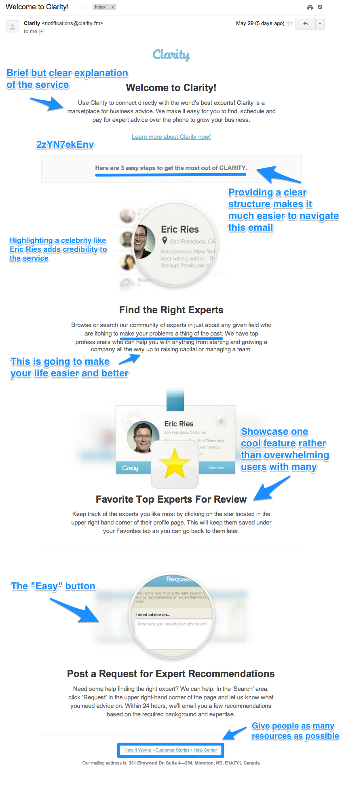
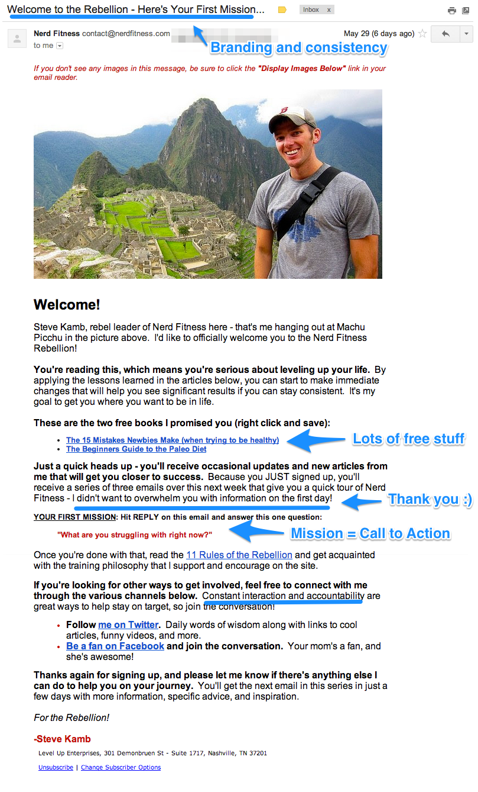

Transactional emails are almost always a wasted opportunity. Think about it like this: promotional emails essentially beg for attention. They are loaded with calls to action and beautifully crafted copy, but their open and click-thru rates pale in comparison to their transactional brethren.
Transactional emails are functional.
They deliver value, and people recognize it. A study by Experian found that some transactional emails are opened at 8 times the rate of promotional emails.
The frustrating part is that most transactional emails include no additional content, no information, no calls to action. Marketers usually don’t spend time on the copy or the design. In fact, many transactional emails are sent by a third party, meaning your customers or users are receiving communication from your company that you didn’t even write.
So your customers love opening emails, sent on your behalf, that you didn’t even write, and that have no marketing value.
Let’s fix this.
Table of Contents
For this guide, we looked at 31 transactional emails and analyzed them for smart marketing and missed opportunities. The result is a wealth of information about taking your business to the next level. We divided the emails into categories and tore apart five in each section:
1 Welcome Emails
Welcome emails don’t have to be complicated. In fact, simpler is often better. But it’s important to keep the onboarding process moving. You’ve convinced users to try your product, but if they are confused about how to use it, you risk losing their interest. Your welcome email should emphasize the value of your product and offer help.
Woopra
Woopra is an advanced analytics platform, so it makes sense that the company understands how to welcome new users. Like Vero, the software requires that a bit of JavaScript be installed on the user’s site in order to track behavior. Not every user has the technical expertise to install the software, even if he or she is a perfect user. For this reason, it’s vital that Woopra offer help, support and documentation.
Why This Email Rocks
- It offers several ways to get customer support right away. Users can email a customer service representative directly or file a ticket. The only improvement the company could make would be to allow users to respond directly to the welcome email.
- It gets users excited right away. Take a look at the language in the email: Start discovering who your customers are. Woopra assumes, correctly in most cases, that marketers really don’t know exactly who their readers and customers are. The right customer understands how powerful that statement is, and it’s great motivation to get up and running quickly.
- It puts a name and a face on the company. A lot of welcome emails come from the CEO. We aren’t knocking that practice, but leading with customer service is important. Woopra has put a face and a name on this email, and it belongs to a customer support person. It’s a wise move, especially for a product that requires installation before it can be used.
Zapier
This is not your traditional welcome email. It’s actually the second welcome email of the series. The first is sent when new users sign up; this one is sent when the free trial expires. It “welcomes” users to Zapier‘s free plan and is an interesting way to encourage users to upgrade or to simply educate them on what the free plan includes.
Why This Email Rocks
- Plain text emails often feel more personal. That is definitely the case here. Zapier even used hyphens instead of bullet points – both are a great way to make emails easy to read – to avoid any styling inconsistencies.
- Most welcome emails don’t have a sense of urgency to them, since the users have already signed up. This one, however, is encouraging users to upgrade to avoid losing any data that exceeds the free limit. Because it’s framed as a welcome message rather than a promotional one, the strategy works very well.
- One downside of plain text emails is that calls to action have to be built into the content. Buttons, arrows and other visuals are out. The upside is that users don’t feel like they are being sold, since the email looks just like one they might receive from a friend. Zapier offers two good calls to action. The first is simply to upgrade, but the second is more interesting. That one sentence is personal and makes users feel comfortable. This is how they use email anyway, so there are no new steps to learn and no fear of the unknown.
“If you didn’t get the time to try Zapier during your trial, but really wish you had, just email me back and we can extend your trial.”
Clarity.fm

Why This Email Rocks
- The intro is clear and concise. You might expect this from a company named Clarity. It takes this opportunity to drive home the value of the company’s service.
- Structure makes for easy reading, especially since most people skim rather than peruse. Clarity lets users know that there are three steps, making for easy reading and navigating. A good user experience should spill over from your product or service to your marketing, and this email is a perfect example.
- Social proof – like showing how many people tweeted an article – is one of the best ways to encourage users to take action. Celebrity endorsement is a form of social proof and, in this case, Eric Ries is the perfect person to feature in this email. Ries is a superstar in the startup world, and the fact that Clarity users could actually talk to him lends enormous credibility to the product.
- The folks at Clarity sprinkled this email with soothing copy. It makes new users feel comfortable and safe. Here are a few examples:
- “We make it easy”
- “3 easy steps”
- “Make your problems a thing of the past”
- “Help you with anything”
- “We can help”
- In the welcome email, Clarity highlights only a single feature about the software. Rather than overwhelm new users with tons of information about the product, the company homes in on how to “favorite” an expert for later.
- Clarity has also included an “Easy” button. The last of the three sections of this email lets users know that if they are having any trouble, they can request help.
OKDork
Noah Kagan doesn’t play by the rules. It’s one of the primary reasons he’s been so successful, and his work makes for great marketing lessons. OKDork (Noah’s blog) is a perfect example.
Why This Email Rocks
- This email is short and sweet but is loaded with information and incentives. For example, the presentation Noah links to is 40 minutes long.
- The first thing Noah does is create an open forum for two-way discussion. This is a blog, so it’s a living, breathing marketing tool. Asking readers what they want to know about is the perfect way to ensure they keep reading. Noah really emphasizes this when he mentions that he reads all emails.
- Noah makes readers feel special by asking them not to share the presentation he links to in the email (that’s why I’ve blurred out the URL). By doing this, he makes readers feel like they have access not only to him but also to resources that competitors don’t.
Nerd Fitness

Why This Email Rocks
- Steve is all-in on the nerd branding. Throughout his emails and blog, there are references to Star Wars, Transformers and Lord of the Rings. His emails, including this one, contain “Missions,” which are actually calls to action.
- This email contains a lot of free stuff. The two e-books combined contain 65 pages of information. The links to the books alone are worth saving the email.
- The call to action is brilliant. Just like Noah Kagan asked his readers what they wanted him to write about, Steve sends his readers on a mission. “What are you struggling with right now?” he asks. The answers let Steve know how to prioritize his future content and help him get a feel for who is really serious about getting fit. It’s a very smart strategy.
- Near the end of the email, Steve uses the words “constant interaction and accountability.” He understands that his readers will only become raving fans if they get in shape because of his training, but he also commits to interacting with readers and staying accountable along the way. The ability to reply to the email is a great start and proof that he is serious.
2 Notification Emails
These messages are crucial to banks, social networks, Software as a Service businesses and just about any membership website. Too often the messages are boring. Functional, but boring. Why not spice them up? Or better yet, actually use them as a sales tool? Notification emails, like all transactional communication, are still a reflection of your company and a key touch point with customers and leads. Here are a few examples of notification emails that highlight smart marketing, and a few suggestions for improvement.
CrashPlan
CrashPlan is a very cool service that automatically backs up computers to the cloud. The company sends quite a few notification emails about my backup status, but this one really caught my attention; it was letting me know that CrashPlan had been unable to back up anything for three days. If something were to happen to my computer, I’d risk losing valuable data for good. This email is functional, but it’s also a good marketing tool.
Why This Email Rocks
- This email does an excellent job of creating a sense of urgency. The main goal of this message is to prompt me to connect again. It should, however, offer some suggestions to fix the problem. Do I have a bad connection? How can I remedy this problem? There is a link to get customer support, but more information would be useful. A clear call to action would be helpful.
- Emails like this remind me of the value of the service. It’s not free, so it’s wise of CrashPlan to subtly remind me that the service is worth my money.
- This message is personalized by using the name of the device that needs to be backed up rather than my name. I like this because it’s a reminder that I can add more devices, but personalized emails are always more personal when recipients can respond. Sending emails from “noreply@yourbusiness.com” negates the personalization.
Disqus
Notifications at the core of Disqus‘ business so it’s crucial they make the most of them. They nailed this one. Let’s take a closer look.
Why This Email Rocks
- The primary thing I love about this is that Disqus has built email into the functionality of the company’s service. The message lets me know that I have a new blog comment, but I can also moderate it by replying to this email. Now, the email is more than just a notification … I’m actually using Disqus right from my inbox.
- There are several deep links in this email, which make navigation much easier. When I click the blue “Reply” button, I’m taken not only to the correct blog post but also to the direct location of the comment. When I click “Settings,” I’m taken not just to my account but to the actual page where I can adjust my notification settings. Deep links allow your users to act quickly and efficiently.
- The personalization here is subtle but effective. First, Disqus uses the name of my blog post in the subject line. I spent hours writing that post, and I’m keen to know what people are saying about it. Also, rather than using my name, Disqus includes my picture.
Chase
So far, we’ve looked at examples of really good emails. They are great to learn from, but we can also learn from bad emails. Like this one:
Why This Email Needs Work
- Everything about this email feels corporate. It makes me feel like a number, not a customer. From the subject line to the sender’s address to the greeting, no effort has been made to make this message personal. I mean, is it really necessary to include the service mark in the greeting? We know Chase is a trademarked brand, and the mark has nothing to do with this email.
- Because the email is letting me know about a new message, there should be a deep link to the message center. Why bother with instructions when a simple link would do? (It’s worth noting that banking institutions need to be careful with links in emails because of phishing and spam concerns.)
- The email also explains how to use the mobile app to view the message but provides no link to download the app. Why not? It’s the perfect (and most useful) place to plug their mobile app.
- When I attempt to change my email address, the provided instructions aren’t accurate. It’s possible the copy in this email is old … one more reason deep links would be helpful.
ESPN
With this email, ESPN accomplished what Chase could not. A message notification doesn’t need to be complicated; it just needs to deliver information and provide an easy way to respond. This email does it right.
Why This Email Rocks
- Sometimes, less is more. This email is short and simple. It delivers a message and offers an easy way to respond. Unlike the email from Chase, this one left out unnecessary text, so I can simply concentrate on the message and act as needed.
- There are two important deep links in this email. One takes me directly to my league, where I can manage my team, view messages and see what the other teams are up to. The other link takes me directly to the section of the site where I can reply. When I get there, the cursor is blinking, and I can quickly send off a message.
- This doesn’t waste any space. The branding is simple and effective, and the content is short and actionable. It’s exactly the way a notification email should be.
PayPal
Let’s close out this section with an example of a company that got some but not all of the details right. PayPal’s payment authorization email is much more than a notification but still includes some of the same “corporate” qualities that financial institutions should be moving away from.
Why This Email Needs Work
- PayPal doesn’t include deep links in this email. As previously discussed, deep links would make it much easier to change notification preferences and contact customer service.
- Even though many emails ask recipients not to reply, some will anyway. It’s good practice to monitor mailboxes used for sending transactional emails.
Why This Email Rocks
- My favorite part about this email is that PayPal isn’t afraid to promote something. It’s not always the right thing to do, but I am indeed curious about what other stores accept PayPal. The copy used – “Spring is in the air, your financial information shouldn’t be” – implies that the service is secure. Even if people don’t click, it’s a reminder that PayPal is a good product.
- PayPal avoided using a “From” address that included “noreply.” This is one of the worst email practices, and we see it often. “Service@paypal.com” sounds like a place where I could get some customer service. Even though I can’t reply, it helps set the tone for the rest of the email.
3 Confirmation Emails
When you send emails that people really care about, you create a perfect opportunity to turn their attention into action. Shipping confirmations, password-change confirmations and double opt-in emails are examples of what people expect in their inboxes. Why let that attention go to waste while begging people to open your promotional email?The examples below highlight different ways you can use personalization, design and friction-free copywriting to turn confirmation emails into conversions.
Amazon
No one does email like Amazon. The company has loads of data about its customers, but more importantly, it fosters a culture of innovation. No stone is left unturned in Amazon’s efforts to be the most efficient company possible, and it really shows in the emails sent. Here’s an example of a shipping confirmation email:
Why This Email Rocks
- This email is loaded with deep links. Rather than send me to the home page and tell me to log in and look for “Order History” for my account, Amazon just sends me directly to the page I need. The package-tracking link is simple, too. There is no need to copy and paste a tracking code into the UPS website; the link takes me exactly where I need to go. Even the social media buttons link to pre-populated posts with copy and a link. It’s this kind of thinking that has helped grow Amazon into one of the most successful companies in the world.
- There are several efforts to upsell the customer in this email. First, the email offers a rebate if I sign up for an Amazon credit card. Note the friction-free language used here. Rather than using words that “describe things people have to do, not things they want to do” – like “Sign Up Now” or “Get Started” – Amazon is careful to use comforting language, such as “Learn More.” I guarantee Amazon has tested other copy and has proved that this is the most effective way to drive credit card sign-ups. Sometimes it’s easier to learn from the best instead of from your own mistakes.
- The other two upsells take the form of advertisements at the bottom of the email. These aren’t just standard banner ads; they are based on my previous purchases. Amazon has once again used the copy “Learn more” to entice me to click.
- Interestingly, this email is not mobile responsive. In fact, it’s a pain to navigate on a mobile device. What does Amazon know that we don’t?
eBay
Let’s take a look at another massive e-commerce site to see what we can learn about confirmation emails. EBay recently faced a public-relations nightmare when it was discovered that millions of customer records had been compromised in a data breach. It was bad news for eBay and its customers and required 145 million people to change their passwords. The screenshot above is the email I got after changing my password.
Why This Email Rocks
- This email strikes just the right tone. A password-change email right after a data breach is NOT the time to promote a product or recruit new readers to your blog. EBay kept this email simple to avoid adding fuel to the already hot PR fire.
- Content is important not only for marketing but also for customer service. Look at how eBay uses content to explain steps users can take to protect their own security. Also note that eBay used the same language as Amazon – “Learn more” – to entice users to click.
- This email comes from the “eBay Trust Team,” which, after a bit of research, I learned is a real department. If it weren’t real, it would come off as cheesy, but because it is in fact an actual department, it was a great idea to insert this into the email.
Copy Hackers
This is a monster confirmation/welcome email, but what else would you expect from copywriting goddess Joanna Wiebe? This email is absolutely consistent with the type of writing and content you’ll find on her website and social media feeds. Here are a few reasons why this email is awesome … now go sign up to receive it yourself.
Why This Email Rocks
- Joanna makes copywriting look so easy. Take note of the conversational tone and the fun language:
- “Tickle trunk o’ stuff for you”
- “4-part fluff-free mini-course”
- “You never have to buy. Ever. That’s totally cool.”
It’s not easy to appeal to buyers’ emotions, which is why it’s so useful to read Joanna’s blog and get her emails. From the subject line (“Yay! You’re getting weekly tips + your free persuasion ebook is inside”), I immediately feel comfortable with her writing because it feels like she is talking to me in person.
- The calls to action in this email are very different from most marketing materials. (Remember, this is marketing, even if it doesn’t feel like it.) Joanna asks people to take action without links. When readers add her to their “safe senders” list or Primary Tab, it guarantees that her emails will be delivered. This is so important and builds a foundation for her to use more profitable calls to action in the future.
- This email contains a testimonial, something you won’t see in many confirmation emails. Why add a testimonial to a confirmation email, since the user has already subscribed? Because if you aren’t constantly keeping readers’ attention, you risk losing them because of disinterest. It’s always a good idea to use testimonials to reinforce your brand and the value you provide.
- Have you ever heard of an evergreen email? You haven’t, because I just made up that term. It’s the equivalent of evergreen content, in that it’s valuable regardless of when a new user finds it. This email includes links to hours of reading, meaning that it’s so useful, a reader might even bookmark it.
Ramit Sethi
Don’t you like the idea of a required call to action. If only you could demand that your readers took the action you wanted them to. Well, Ramit Sethi has done just that in his subscription confirmation email.
Why This Email Rocks
- Look at the subject line: “RESPONSE REQUIRED.” This is dramatic, and it makes me feel like I’d better respond. Double opt-in emails like this are a formality, but why risk losing anyone in the process? Ramit is very clear about his purpose here, which makes this email very effective.
- The blend of plain text and personalization makes for emails that actually feel personal, since they look like an email from a friend. Ramit is smart to use only my first name, because saying “Hi Jimmy Daly” would take away from the personal look and feel of the email.
- Ramit infuses value and urgency into this email. Language like “How to earn more on the side” and “How to find your Dream Job” are incredibly enticing. As he says, it’s “Material you can start using immediately.” He builds up the value, then applies a touch of pressure to get me moving.
- The single call to action in this email is very simple and clear: “Click Here To Confirm.” Because it’s a plain text email, the blue hypertext stands out, and I would never be confused about what to do next.
Copyblogger
You’ll notice this example isn’t marked up. That’s because it doesn’t need to be. This email is exactly what’s wrong with transactional email.
- This email is from Citrix, not Copyblogger, and that is exactly the problem. Copyblogger excels at writing persuasive copy and killer emails, but this one is the standard GoToWebinar template. Sure, it’s functional, but it’s not at all consistent with the brand that Copyblogger has worked so hard to build.
- GoToWebinar’s branding is all over this email, and there are even links to the company’s site. Webinar attendees need this email in order to attend. It’s nearly guaranteed to be opened. It’s the perfect time to remind people of the value of the content and reinforce the Copyblogger brand.
- If you host webinars, it’s easy to miss this in the excitement of capturing new leads and the preparation of the content. But always remember that you should control every interaction your brand has with customers and leads.
- Vero can help you send webinar-confirmations emails!
4 Reminder Emails
These are some of the most important emails you will ever send. Ever.
Why? Because reminder emails are one of the primary ways to renew subscriptions and gain customer feedback. Reminders should be taken very seriously because the business consequences can be massive.
Hover
For domain-management company Hover, reminder emails are at the core of its business. Customers pay for domains on an annual basis, and renewals are the easiest way to keep business growing. The company already invested time and money in finding these customers, so keeping them is a priority. This reminder email does a number of things correctly.
Why This Email Rocks
- If you want people to convert, you have to make it as easy as possible. Remove every step that could possibly result in a lost conversion. Hover has done that with its deep links. The “Renew now” link takes me to the exact page where I can extend my domain for another year. If you ask customers to go to your site, look for “My Account” in the top right corner, blah, blah, blah, you will lose them. Make it easy, like Hover has.
- The subject line and the first sentence apply a bit of pressure to renew quickly. Reminding me three days before my renewal date gives me enough time to consider my options without being far enough away that I click delete. And this isn’t the only email in the sequence. Hover also sends emails 30 days out, and another with 24 hours left. The urgency builds gradually without being annoying.
- Customer service is important for every business but especially Hover, which is competing with giants like GoDaddy. I can reply to this email or click the customer service link to get support. It’s always a good idea to offer customer support in a transactional email. Always.
- It would be nice if this email were personalized, but still, the signature is powerful. In sequence, it plugs content, points me to customer support and then reminds me that Hover is a company that can be trusted.
Groove
Groove is help-desk software, so it’s not surprising to see that the company’s messaging is customer-centric. It’s also encouraging to see that some businesses really take reminder emails seriously. Here are a few reasons this email is very effective.
Why This Email Rocks
- This email is broken into two sections:
- The call to action (“Reactivate now”)
- Learn more (“See how some of our customers have used Groove…”)
- Depending on the timing and the purpose of an email, it can be beneficial to put the information – testimonials, tutorials, etc. – before the call to action, but Groove got it right here. Users have already completed a free trial so they understand that this software could be beneficial to them. Going for the conversion right away is the right move. I like the follow-up because it reinforces the value of the product and offers social proof that people just like you have been really successful with Groove.
- Customer-centric messaging is not just an email marketing strategy; it’s the foundation of a good business. This email comes from “support@groovehq.com,” which sets the tone for a friendly and helpful conversation. Throughout the email, comforting language is used:
- “Don’t worry”
- “Settings are all saved for you”
- “Cheers!”
Rather than apply urgency, the company simply makes its free-trial users feel very comfortable with the Groove brand.
- Groove has done one other thing incredibly well in the email. It anticipated the reason that some people might not convert from free-trialers to paying customers and addressed that possibility. The company understands that if someone takes a free trial and doesn’t convert, it’s because that user doesn’t see the value of Groove. Providing testimonials and success stories is the perfect way to assuage that doubt.
Kiva
When you build a company on kindness, you also build equity with your customers. Kiva, the microlending service that helps entrepreneurs and farmers in Third World countries grow their businesses, can capture the attention of users because it has built a meaningful brand. When Kiva hits “Send,” people read and take action.
Why This Email Rocks
- The best and most important thing this email does is appeal to human emotion. It empowers Chris to change someone’s life. Look at the language used:
- “That $36.20 could do a lot of good!”
- “You could be the turning point.”
- “The money in your Kiva account could change a life.”
When you read this email, you feel something. When that emotion inevitably turns into action, Kiva’s mission is achieved.
- This email is personalized in an interesting way. At the time, there was $36.20 in Chris’ account. Kiva used this number as the subject line, and several more times throughout the body of the email. It’s interesting because the money is already spent, it just needs to be invested. By focusing on the amount, Kiva drives home the point that the money needs to be put somewhere in order to be useful.
- Kiva users can invest those funds in thousands of entrepreneurs, but choosing one can be difficult. Rather than let “analysis paralysis” take hold, Kiva offers suggestions (and links) on where to invest. There are three suggestions in this email … just enough to present options without overwhelming recipients.
Reminder emails don’t have to be long to be effective. Take one look at this reminder from LinkedIn and you will understand what I mean.
Why This Email Rocks
- It’s so straightforward. There is a very simple goal (get me to accept Joe’s request) and only one thing to do once I’ve opened the email (click the button).
- The “From” field is put to good use here. It says it’s from Joe Sinkwitz (the person requesting the connection) as opposed to just from LinkedIn.
- LinkedIn puts a face to the name. Once I saw the picture, I remembered that I’d met Joe at Authority Intensive and immediately accepted his request. (Sorry for the delay Joe!)
- CopyPress is a cool company. Check ’em out.
GEICO
Why does it seem as if large companies are sometimes tone deaf about their messaging? Once each quarter, I’m reminded that I owe money to GEICO. The email is functional – I need to budget for it and actually pay – but it’s one of my least favorite emails to receive. It doesn’t have to be this bad, however. Let’s take a closer look.
Why This Email Needs Work
- I’m not happy about paying for car insurance. Finding this in my inbox is a real downer, and GEICO reinforces that by neglecting to remind me of the value of car insurance. Nowhere in this email is there a value proposition. Why not take a moment to send me to some FAQs about my policy or even some case studies where GEICO insurance really helped someone out. And what about my roadside assistance? This would be the perfect place to remind me of that service. Basically, GEICO needs to tell people what they are paying for rather than put a damper on their entire day.
- The tone of this email is all wrong. Here are the first four things I see:
- Payment reminder from GEICO
- As a courtesy to you, we send notifications to remind you of upcoming automatic payments!
- Your Payment Reminder
- Your next auto policy payment is right around the corner.
Why is GEICO drilling this into my head? And why does the company think I will be thankful (see point #2) and excited (see point #4) about receiving this email? Again, GEICO has offered no value and has repeatedly reminded me about something I don’t want to be reminded of.
- A reminder email probably isn’t the place to link users to your “About” page. It takes up valuable space in the email and serves no real purpose. In fact, when I click this link, the first thing I see is information about working for GEICO. This space should be used to explain the value of what I’m paying for.
5 Request Emails
There are many reasons that businesses need to request something from customers or users. Maybe 30 days after every purchase, an email is sent asking for a review. Or, for Software as a Service businesses, automated emails inquire about usage. In order to be effective, these emails need to be carefully crafted, since the value of the action benefits the business more than the customer. Many businesses struggle with this. Let’s take a look at a few that stank up the joint and a few winners that really nailed it.
Expedia
Let’s kick off this section with a lesson in how NOT to do request emails. Thanks, Expedia, for the help, there are many lessons to be learned here.
Why This Email Needs Work
- The hardest thing to swallow here is that this email is not even from Expedia; it’s from a feedback company called Feefo. Here’s why that is a bad idea:
- The Feefo logo appears above the Expedia logo. What if I’d never heard of Feefo? This creates an opportunity for distraction, disinterest or, worse, distrust.
- The subject line – “Feedback Request on behalf of Expedia” – does nothing to excite me or instill trust. As an Expedia user, I’m wondering whether Expedia even knows this email is being sent.
- The first line of the email is “Replying to this email will not reach Expedia, please use the link below to leave your feedback.” Ah, talk about customer service!
- Some users might just click the button and leave feedback. Others might keep reading and discover that their reviews will be made public. How will this help convert these customers into reviewers? The fact that this is buried below the call to action is downright deceptive.
- The lack of useful links is startling. First, I’m told that if I had an issue with my hotel or flight, I’m given a set of directions instead of a link:
Please click here, sign-in (or use your itinerary number & email address) to access your itinerary and submit a hotel review (when you access your itinerary you’ll see that we’ve added a link above the pricing on the right hand side which will allow you to add your feedback).
How about a deep link instead?
And now that I know that my review will be made public, maybe I want to read Expedia’s privacy policy. I’m told to “please contact Expedia.” How is there no link to it? - As if this email hasn’t rubbed me the wrong way enough, I’m told that I can contact Expedia customer service by snail mail. #Fail.
American Funds
American Funds restores the faith that large companies can actually strike the right tone to connect with their users. The company also offers a reward for willing participants. It’s a win-win.
Why This Email Rocks
- This email is asking for the exact same call to action as the Expedia email but is going about it completely differently. The email kicks off with a subject line that implies the people at American Funds actually care about me as a customer. The copy in this email isn’t perfectly crafted to optimize conversions, but it has avoided the branding confusion and misleading tone of the Expedia email.
- Bullet points are a great way to explain things (which is why this entire guide is using them!). In this email, the sections of bullet points explain what I could win if I take the survey, what I need to do to take it and how the information will be used. It’s succinct.
- This is a strong, but not perfect, message. I wish it had led with the information about the gift card. The intro is a bit confusing, and everyone who opens this email will be more interested in the prizes. I also think American Funds could get more people to click by using buttons instead of a simple link. Because this is an HTML email, a button wouldn’t look out of place and would draw readers’ attention.
Squarespace
Squarespace is an incredibly innovative and customer-centric company. During Hurricane Sandy, Squarespace founder and CEO Anthony Casalena went to the company’s data center and carried containers of fuel up the stairs to power generators. Squarespace’s commitment to customer service is evident in that story and in this email.
Why This Email Rocks
- This email is so simple, and that’s what makes it so effective. It asks, “How did we do?” and then offers a very easy way to answer that question. The call to action is big, contrasts nicely with the background and uses copy that makes it abundantly clear what I will see when I click. (One reason people don’t click buttons is because they have anxiety about what’s on the other side. In this case, that would be impossible.)
- The language used throughout this email makes me feel like Squarespace really cares about my experience:
- “We hope we were able to resolve your issue”
- “We’re constantly striving to provide excellent service”
- “Thank you for your time.”
- “Our Customer Care team will be in touch with you right away”
- On the off chance that this email reaches a user whose ticket hasn’t been resolved, the user can simply reply to the email for an answer. Easy and effective.
Mint.com
Not all request emails want you to take surveys and write reviews. Some, like this one, need your help with actually making the app function. Without updated account information, Mint.com isn’t a valuable service.
Why This Email Rocks
- The more Mint knows about you, the better the app is. That’s why it’s imperative to the company’s business that emails like this one motivate users to take action. The approach is, “We’re in this together,” and that feels appropriate for this request. The company wants to help me but can’t if I don’t do something first. It’s the right tone for the situation.
- You know that feeling when you are about to sneeze, but can’t? It feels so unresolved. That’s how I feel when I see this email. “Mint is almost working but not quite … come fix it.” I can’t move on with my day until it’s fixed.
- Encouraging me to download mobile apps and follow the brand on social media is also key to the success of a service like Mint. The more I understand why financial knowledge is important, the more valuable Mint’s service becomes. The apps also facilitate increased engagement. It was wise to plug them in this email.
Amazon
Amazon didn’t become the king of customer reviews by accident. It did so by asking everyone who made a purchase to leave a star rating and write a review. The strategy is battle-tested and super effective. Here’s why.
Why This Email Rocks
- Each star links to the review page, but depending on which one I click, the fields are pre-populated with that selection. It eliminates one step, but if that step increases the number of conversions by a small percentage, it can make a huge difference for a large company like Amazon.
- I can click almost anywhere in this email to get to the review page. The book image, the text (“Start by rating it”) and even my name all link to the page. Keeping the focus singular helps to prevent distraction.
- Reviews are so important to Amazon’s business that it also asks me to review past products. Amazon knows that reviews drive sales and is keen to remind customers about it as often as possible.
After reading this, I decided to re-think all our transactional emails, and I think I succeeded at setting a pretty solid base for development; In case anyone is interested, here it is: http://zaman.io/how-to-organize-and-develop-transactional-html-emails-with-middleman-and-premailer/
Chase and other banks have good reasons to make their emails non-transactional, as they want to get people out of the habit of signing into their bank accounts via email links in order to reduce phishing scams. Seeing that the average age of a bank customer is written in scientific notation, that’s not altogether a bad policy.
You make a good point. Usability is important, but not more than security.
I had this bookmarked and finally went through it. What a terrific piece, totally looking forward to A/B testing some transactional email series.
LOL – nice to see you on here Luiz!
This is such a great resource. My question then is this – is it better to send it from a different domain, subdomain, or actual domain. I see a lot of emails come from something like xyz@m.company.com. Our website is http://www.dollarhobbyz.com, but our emails were set up by another team before I came on board and they set them to dollar-hobbyz.com. Which is the preferred way to send transactional and promotional emails of the above 3 methods?
Good article has shared this blog.You make a decent point. Ease of use is essential, however not more than security.
Interesting discussion ! Coincidentally if others require a a form , my husband came across a fillable version here
http://goo.gl/53oGdL